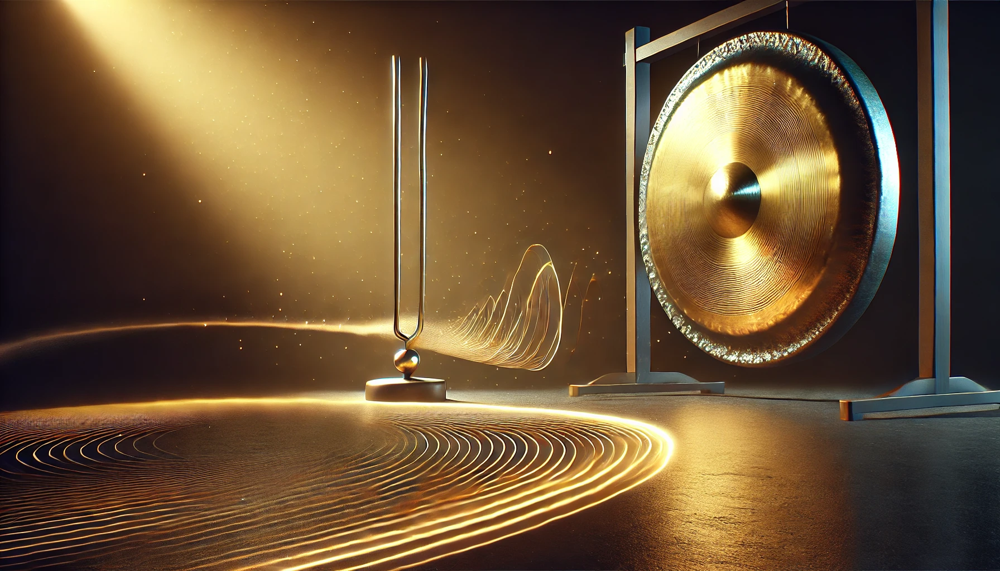

10-Sekunden-Fokus
Richte Deine Aufmerksamkeit für 10 Sekunden auf einen Gegenstand. Beobachte, ob Gedanken kommen – und lächle innerlich darüber. Kehre sanft zurück.

Impulse · Blog · Stimmen
INSPIRATION
Kleine Übungen für Fokus, Ruhe und Selbstwirksamkeit. Sofort umsetzbar – ohne Apparat.
Richte Deine Aufmerksamkeit für 10 Sekunden auf einen Gegenstand. Beobachte, ob Gedanken kommen – und lächle innerlich darüber. Kehre sanft zurück.
Benenne heute Abend drei Dinge, die besonders schön, stimmig oder neu waren. Versuche es möglichst plastisch.
Denke morgens 60 Sekunden an eine Person, die Dir gut tut. Fühle, wo sich dieses Gefühl im Körper zeigt.
Eine ruhige 5-Minuten-Reise: Atem zählen, Gehirnwellen beruhigen, Sinneskanäle wecken – und spielerisch mit einem vorgestellten Apfel arbeiten.
VERTIEFUNG
Gedanken, Neuro-Basics und Stories aus der Praxis. Mehr Substanz, weniger Buzzwords.
Neurotransmitter, Bedürfnisse, Würde: Ein integraler Blick auf Abhängigkeit ohne Moralkeule.
Wie der innere Kompass Entscheidungen entgiftet – und Orientierung in stürmischen Zeiten gibt.
Fünf kleine Stop-Impulse, die Momentum bremsen und Selbstführung stärken.
RESONANZ
Echte Worte von Menschen, mit denen ich gearbeitet habe. Klar, respektvoll, auf den Punkt.
Ove hört, was zwischen den Worten liegt. Nach einer Stunde war mein Thema nicht „weg“, aber ich war wieder handlungsfähig.
Kein Guru-Gehabe. Klar, menschlich, wirksam. Die 3-Punkt-Routine mache ich seit Wochen jeden Abend.
Lieber Ove, … ein Feedback für Dich:
Mein Coaching startete mit einem Satz von Dir, der mir sehr in Erinnerung geblieben ist…: „Ich fange da an, wo andere aufhören!“
Ich glaube, Du wolltest es auf humorvolle Art auf Dein Alter beziehen. Ich würde es gern auch auf Deine Ausstrahlung und Kompetenz erweitern.
Der empathische und so fröhliche Einstieg wurde von Deiner Glaubwürdigkeit und Erfahrung noch untermauert. Wenn ich eine(n) Coach suche, dann ist mir persönlich ein Maß an Erfahrung total wichtig. Deine Geschichte zeigt, was Du bereits bewältigt hast. Ich fühlte mich sofort sicher.
Und diese Sicherheit hast Du dann durch Dein Sein und Tun im Rahmen meines Coachings weiter getragen.
Ich mag Deine stets so fröhliche und motivierte Art.
Du hörst genau zu und siehst bei allen möglichen Problemen auf meiner Seite stets einen Lösungsansatz. Den gibst Du dann nicht einfach mit einer „Beratermütze“ anbei, sondern hilfst mir bei der Selbst-Erkenntnis.
Dabei ist Dein Methodenkoffer reichhaltig gefüllt. Alle Ansätze hast Du mit spielerischer Leichtigkeit ins Coaching eingebracht und mich dabei immer sicher getragen.
Dafür möchte ich Dir von Herzen danken. Es war eine Freude und tiefe Erkenntnis, von Dir begleitet worden zu sein.
Herzlichst, Sven Becker
Ove stellt die Fragen, die sonst keiner stellt – und genau das bringt mich weiter. Klar, respektvoll, nie belehrend.
In einer Phase, in der ich nur Nebel gesehen habe, half mir Ove, wieder eine Richtung zu erkennen. Kein fertiges Rezept – sondern eigene Schritte, die plötzlich möglich wurden.